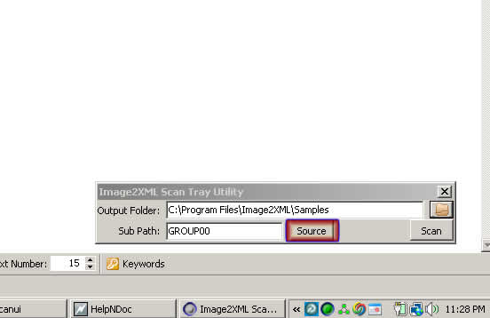
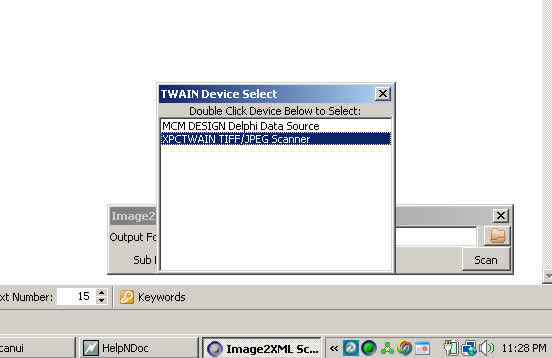
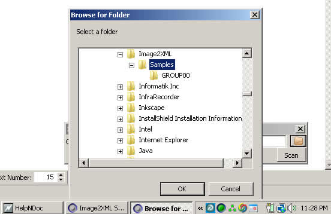
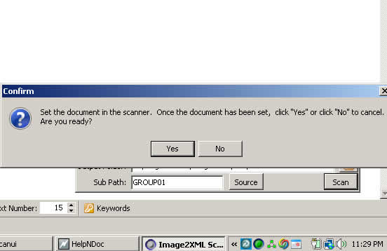

Step 4: Continuous Scanning
Previous | Contents | Next
We are now ready to set up continuous scanning. This involves the I2X Scan Tray utility to feed images to a certain path. This path is specified in Step 3 as the Image path.
- Start the I2X Scan Tray Utility.

- Click 'Source' and select your scanner. If your scanner does not show up, then you do not have a TWAIN compliant scanner available on the system. It could be that you do not have the TWAIN drivers installed for your scanner.

- Set the Output Folder to '<sample pack path>/sample/images.'

- Having an Auto Document feeder scanner is very helpful with this utility. Load the images in the scanner and click 'Scan'. The application should scan* the images into the path you specified.

* NOTE: The advantage of using the Scan Tray utility is the images are written in the format that I2X expects. For those interested, the utility prefers 300 dpi images in TIFF format.
Previous | Contents | Next
Copyright © 2009, NoctuSoft, Inc.
This help file has been generated by the freeware version of HelpNDoc